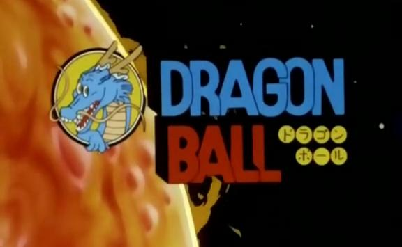
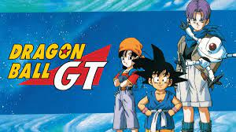

Resumo geral da obra
Originalmente iniciada com uma série de mangá escrita e ilustrada por Toriyama, foi serializada em capítulos na revista Weekly Shonen Jump de 1984 a 1995. Os 519 capítulos foram compilados em 42 volumes tankōbon e publicados pela editora Shueisha.
Dragon Ball foi inicialmente inspirado pelo clássico romance chinês Jornada ao Oeste. A série segue as aventuras do protagonista, Son Goku, desde sua infância até a idade adulta enquanto ele treina artes marciais e explora o mundo em busca de sete esferas conhecidas como as Esferas do Dragão, que convocam um dragão que concede um desejo quando reunidas. Ao longo de sua jornada, Goku faz vários amigos e luta contra uma grande variedade de vilões, muitos dos quais também procuram as Esferas do Dragão.
O mangá Dragon Ball foi adaptado em duas séries de anime pela Toei Animation: Dragon Ball e Dragon Ball Z, que, juntas, foram transmitidas no Japão de 1986 a 1996.
Desde o seu lançamento, Dragon Ball tornou-se uma das séries de mangá e anime mais bem sucedidas e importantes de todos os tempos. Os 42 volumes do mangá já venderam 240 milhões de cópias em todo o mundo, tornando-se uma das séries de mangá mais vendidas da história. Os críticos elogiaram a arte, os personagens e o humor da história. É amplamente considerado como uma das maiores séries de mangás já feitas, com muitos mangakás citando Dragon Ball como uma fonte de inspiração para suas obras. Os animes, especialmente Dragon Ball Z, também são altamente populares em vários países e foram indiscutivelmente uns dos mais influentes em impulsionar a popularidade da animação japonesa na cultura ocidental.
Adaptação para a TV (Anime)
A obra original de Dragon Ball foi dividida em 2 partes para sua adaptação na TV, "Dragon Ball" e "Dragon Ball Z", ambas sob a supervisão de Akira Toriyama em sua produção. Após isso, a Toei Animation continuou produzindo conteúdo de Dragon Ball independente do seu material original (mangá), tendo o aval de Akira para a realização do mesmo.
- Dragon Ball (1986 - 1989) - 153 episódios

"Dragon Ball" uma adaptação dos primeiros 194 capítulos do mangá de mesmo nome criado por Akira Toriyama, que foram publicados na Weekly Shōnen Jump de 1984 a 1988. O anime é composto de 153 episódios que foram transmitidos na Fuji TV de 26 de fevereiro de 1986 a 12 de abril de 1989.
O anime segue as aventuras do protagonista Goku, um forte garoto ingênuo que, ao se encontrar com a adolescente Bulma, se propõe a reunir as sete desejáveis Esferas do Dragão. Depois ele se torna um estudante de artes marciais com o mestre Kame-Sennin, e um ano depois ele e seu amigo Kuririn entram em um torneio que atrai os lutadores mais poderosos do mundo. Ele então parte sozinho em uma nova busca pelas Esferas do Dragão e acaba enfrentando e destruindo o Exército da Red Ribbon sozinho. Três anos depois Goku e Kuririn participam de um outro torneio, porém Kuririn é mais tarde assassinado após esta competição, e Goku exige vingança sobre seu assassino: Piccolo Daimaoh. Três anos mais tarde, Goku deve lutar contra o filho de Piccolo Daimaoh, Piccolo Junior. Os restantes 325 capítulos do mangá foram adaptados para o anime Dragon Ball Z.
- Dragon Ball Z (1989 - 1996) - 291 episódios
Dragon Ball Z corresponde aos volumes 17 ao 42 do mangá, e estreou no Japão na Fuji TV em 26 de abril de 1989, e terminou dia 31 de janeiro de 1996 com o total de 291 episódios, antes de ser dublada em diversos territórios ao redor do mundo, incluindo Estados Unidos, Austrália, Europa, Índia e América Latina. A série já foi exibida em mais de 80 países ao redor do mundo.
Em Dragon Ball Z, as histórias possuem um clima mais sério que as de seu antecessor. Substituíram a comédia, mas o humor ainda existe em muitas partes da série. Possui vários episódios em que o suspense é entrelaçado aos acontecimentos que primeiramente não parecem ter grande relevância, ou de fatos despercebidos e revelados com maiores detalhes no auge de tal acontecimento.
A popularidade da Dragon Ball Z gerou numerosos lançamentos que representaram a maioria dos conteúdos no universo da Dragon Ball; incluindo 17 filmes e 148 jogos de vídeo, muitos deles sendo lançados apenas no Japão, e uma série de trilhas sonoras provenientes desse material. Dragon Ball Z continua a ser um ícone cultural através de inúmeras adaptações, incluindo uma transmissão remasterizada mais recente, intitulada Dragon Ball Kai.

- Dragon Ball GT (1996 - 1997) - 64 episódios

Dragon Ball GT é uma série de anime produzida pelo estúdio Toei Animation e a terceira da franquia Dragon Ball, sendo aficionado e registrado como uma história à parte por Akira Toriyama. Dragon Ball GT é a série mais curta das quatro produzidas, exibida entre 7 de fevereiro de 1996 e 19 de novembro de 1997, composta por apenas 64 episódios e um especial para a televisão intitulado Gokū Gaiden! Yūki no akashi wa Sì Xīngqiú. Diferente das duas séries de anime anteriores, Dragon Ball e Dragon Ball Z, GT não foi adaptado o mangá original Dragon Ball escrito por Akira Toriyama,[4] mas foi criado como uma sequência da série de anime Dragon Ball Z, com uma história original usando os mesmos personagens e universo, que segue as façanhas de Goku, sua neta Pan e seus vários associados. No entanto, Toriyama desenhou alguns dos novos personagens introduzidos no programa.

- Dragon Ball Super (2015 - 2018) - 131 episódios
É uma série de anime criada por Akira Toriyama e produzida pela Toei Animation, que começou a ser exibida em 5 de julho de 2015 e teve seu ultimo episódio exibido em 25 de março de 2018 com um total de 131 episódios. É também uma série de mangá escrita por Akira Toriyama e ilustrada por Toyotarō, serializada na revista de mangás shōnen V Jump da Shueisha. Dragon Ball Super é uma sequência para o mangá original Dragon Ball e a série de anime Dragon Ball Z, com o primeiro novo enredo em dezoito anos.
Dragon Ball Super segue as aventuras do protagonista Goku e seus amigos, depois de derrotar Majin Boo e trazer paz para Terra mais uma vez. Goku encontra seres de longe mais poderosos e atinge o poder de um deus. Ele defende a Terra contra as poderosas divindades destrutivas e viaja para outros universos para encarar oponentes mais poderosos, assim como inimigos quase imparáveis, enquanto descobre seus novos poderes sob os deuses do universo.

- Quantidade Total de Episódios
| Anime | Numero de Episodios |
|---|---|
| Dragon Ball | 153 |
| Dragon Ball Z | 291 |
| Dragon Ball GT | 64 |
| Dragon Ball Super | 131 |
| Total de Episódios: 639 | |